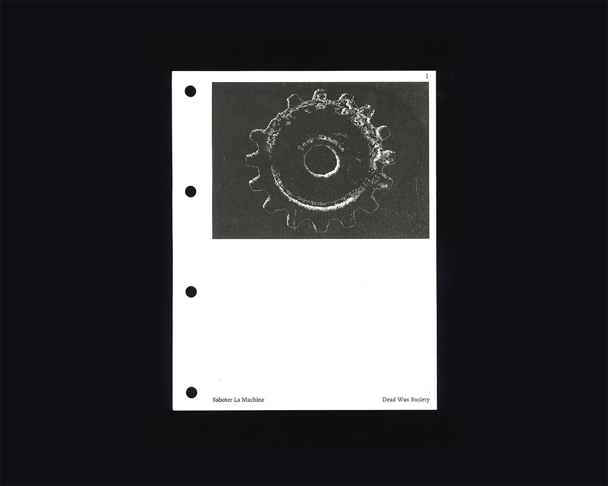
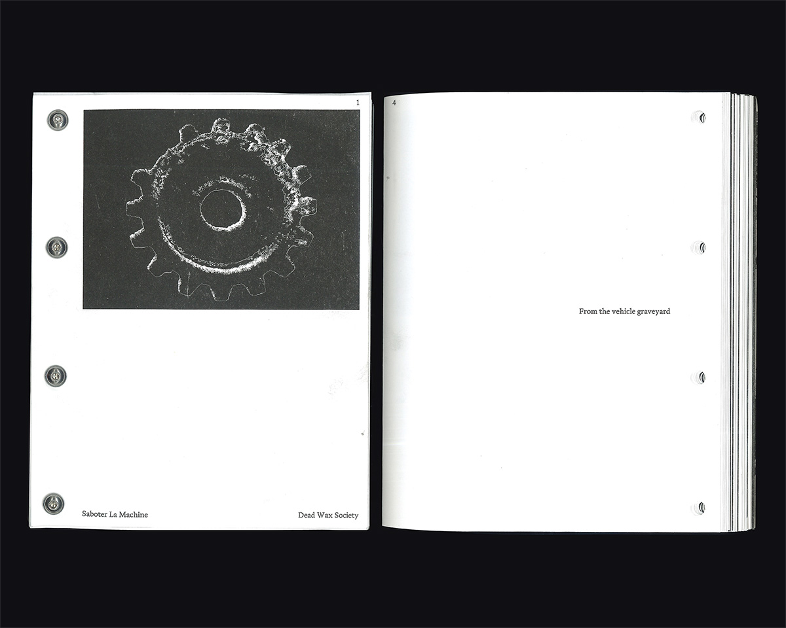
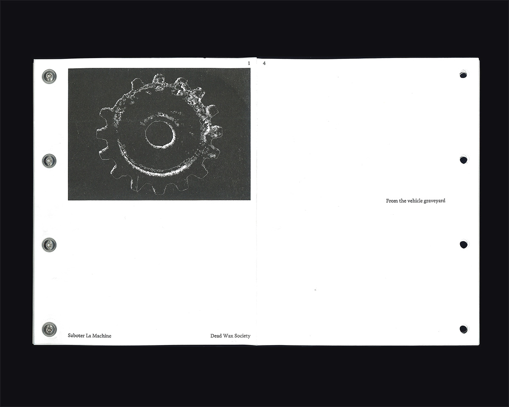
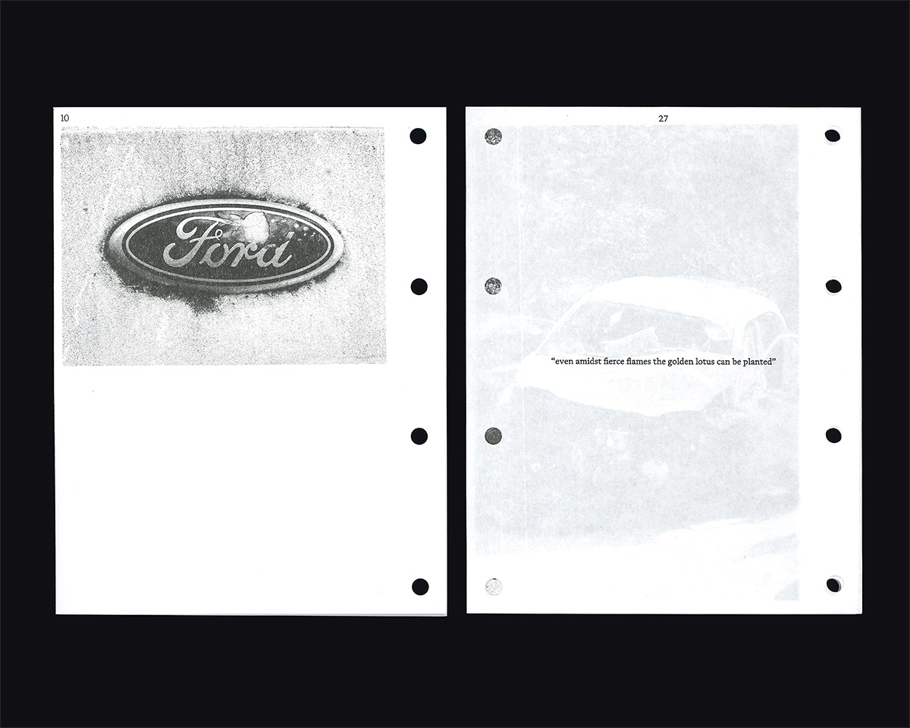
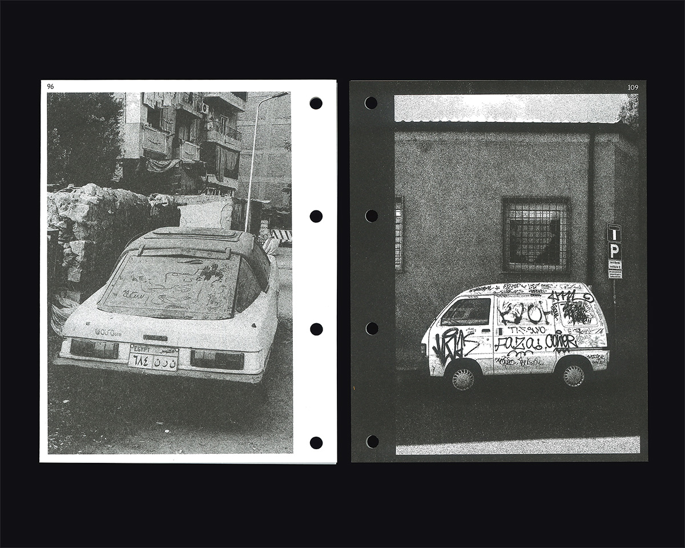
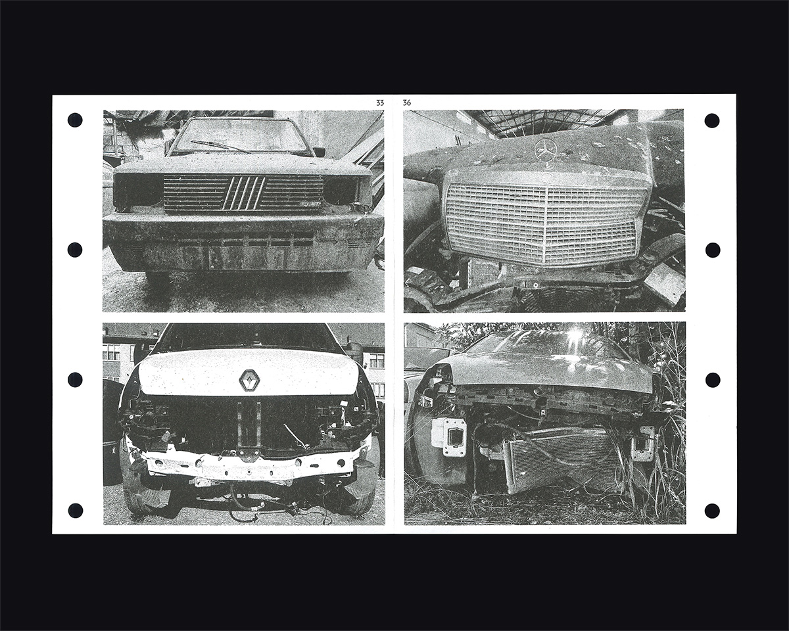
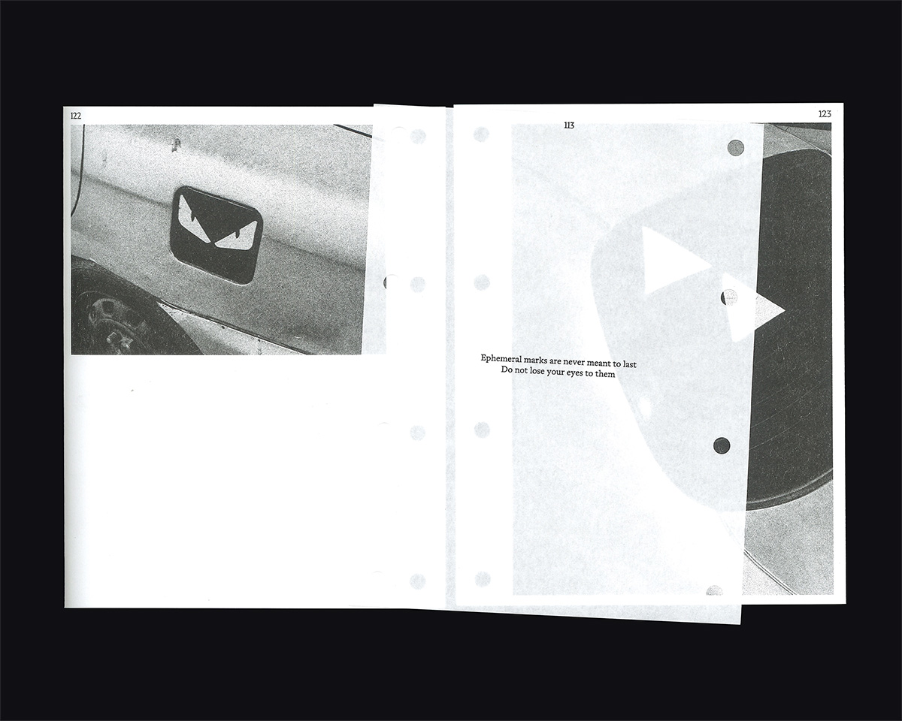
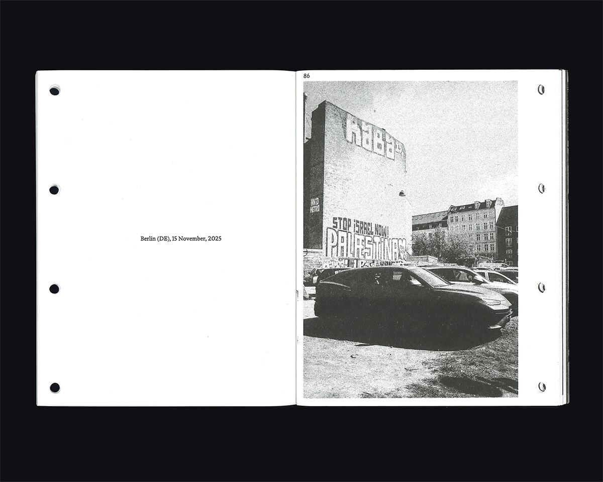

The book is the result of a series of photos that have been selected from an archive of more than 1,000 images, collected and taken over the past seven years in different parts of the world. The archiving process is an attempt to investigate vehicles as a medium, their languages of customization, and the different typologies that emerge according to needs and cultural contexts. Ranging from unintentional approaches to more conscious and elaborate forms.
The book itself is designed to give the reader the freedom to assemble and bind it as they wish. It can be composed and deconstructed according to need, following the suggested bindings or by exploring new ones. It can be approached as a narrative, as an archive, or even transformed into a small collection of posters. It is an object meant to be shaped by the reader.
First edition 2026, NO ISBN, No rights reserved. Every part of this publication can be reproduced or transmitted in every form, without permission in writing from the publisher.
Keep in mind that the book will get dirty; risograph printing will never let your collector fetish truly shine. It’ll change chape, shift, and age over time. You simply have to come to terms with that.






